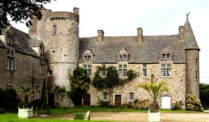
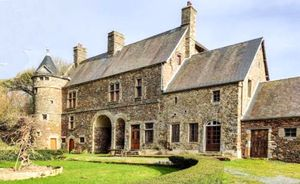
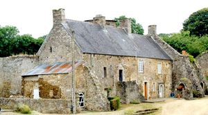
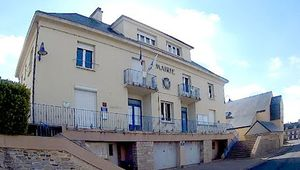

Recensement Jean-Claude Truffet
| Département | 50 — Manche |
| Canton | Les Pieux |
| Commune | Portbail |
| Type d'édifice | Château |
| Période d'origine | XII- |
| Coordonnées GPS | 49° 22' 06" Nord, 1° 40' 00" Ouest |




Trois châteaux à Portbail; Dicq, Lanquetot et Montfiquet. DICQ, le fief du Dicq sétendait sur Portbail, Gouey, Saint Lô dOurville, Saint Jean et Saint Georges de la Rivière et le Mesnil. A lorigine, il dépendait de la baronnie de Néhou. En 1283, à la suite du partage de cette baronnie, il fut inclus dans la baronnie dite dOrglandes. Mais à la fin du XIVe siècle, il relevait directement du roi. Lactuel manoir du Dicq a été construit par Pierre du Castel, écuyer, seigneur de La Balle dAubigny qui avait acheté la terre du Dicq en 1549. Il a été remanié par les Vivien à la fin du XVIe siècle puis par les Poërier de Portbail au début du XVIIe siècle. Gilles Poërier épousa Suzanne Vivien, fille de Pierre Vivien, et par ce mariage devint seigneur du Dicq. La cour est entièrement fermée par des constructions à laspect trapu et solide, munis par endroits de solides et massifs contreforts. La façade sur cour est percée de fenêtres dont les meneaux ont disparu. A la partie gauche du logis, un escalier extérieur mène, quand on a franchi la porte à fronton triangulaire, dans une grande salle dotée d'une imposante cheminée à colonnettes, chapiteaux corinthiens et corniche. Éléments protégés MH : la cheminée Renaissance : inscription par arrêté du 10 novembre 1928.
LANQUETOT, le plus ancien possesseur connu est Roger de Lanquetot, chevalier, qui, au XIIIe siècle, céda à labbaye de Lessay tout le droit quil avait ou prétendait avoir en léglise Notre-Dame de Portbail et en ses chapelles parce que labbé de Lessay, patron du prieuré et de léglise Notre-Dame de Portbail, lui laissait la liberté de bâtir une chapelle en son manoir de Lanquetot. En 1615, noble homme Jean Besnard échangea la terre et le manoir de Lanquetot avec Gilles Poërier, seigneur du Dicq, contre dautres héritages. A la veille de la révolution, Lanquetot appartenait à François Bonnaventure Corentin de Mauconvenant, marquis de Sainte-Suzanne et son frère Adolphe-Charles de Mauconvenant, chevalier puis marquis de sainte-Suzanne. Le fief de Lanquetot dépendait de celui du Parc à Saint-Lô-dOurville. Le seigneur de Lanquetot devait au seigneur du Parc, le jour de la Saint-Hilaire, 30 sols de rente censive quil devait apporter au manoir du Parc. MONTFIQUET, il a appartenu aux Montfiquet, sieurs de Montigny ( Yvetot-Bocage ) et de Saint-Siméon ( Portbail ), qui avaient pour armes un écu » dargent au léopard passant de sable « . Ces armoiries se voyaient autrefois sur un vitrail du manoir de Portbail. Elles se voient encore actuellement au-dessus de la porte piétonne du manoir de Montigny à Yvetot-Bocage. Un Montfiquet aurait été chevalier, en 1066, dans la troupe de Néel de Saint-Sauveur lors de la conquête de lAngleterre. Cependant, la noblesse des Montfiquet, sieurs de Montigny et Saint-Siméon, date seulement du XVIe siècle: lors de la recherche de Chamillard, en 1666, les Montfiquet font remonter leur noblesse à Richard de Montfiquet qui vivait vers 1550 à Saint-Martin de Blagny.
Le dernier des Montfiquet, Jean Antoine, neut que deux filles: Marie Louise qui épousa François Hervé de Lemperière, écuyer, seigneur de Rouville ( Orglandes ) et Susanne Françoise, dame de Montigny, qui épousa René Joseph Philippe, sieur de Marcambie.
Famille de Poërier de Portbail Lanquetot, François Bonnaventure Famille de Montfiquet
"
Trois châteaux à Portbail; Dicq, Lanquetot et Montfiquet. GPS : 49° 22' 06" Nord, 1° 40' 00" Ouest